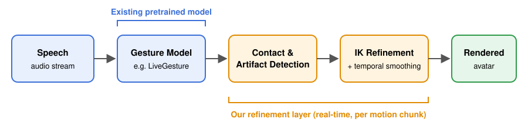
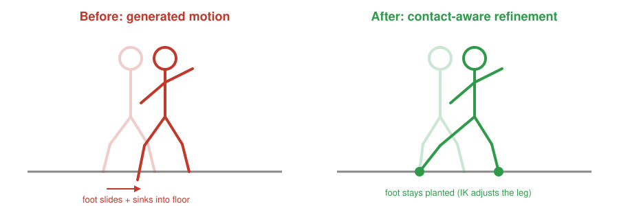

Summary
Recent models can generate full-body human gestures directly from speech in real time, but the resulting motion often contains physical artifacts such as sliding feet, floor penetration, and unnatural joint rotations. Instead of building a new gesture generator, we will build a lightweight, physics-aware refinement layer that sits on top of an existing pretrained model (e.g. LiveGesture). It detects foot contacts and implausible poses, and corrects them using inverse kinematics (IK) and motion constraints, while preserving the original gesture timing and expressiveness and running continuously with minimal added latency.

Problem Description
Context
Digital humans and virtual agents (avatars in video calls, virtual assistants, game characters) need to move naturally while they speak. Streaming co-speech gesture models such as LiveGesture, StreamTalk and GestureFAR can now generate full-body motion from live audio in real time. Their output looks convincing at first glance, but these models learn motion purely from data and have no explicit notion of physics or contact with the environment.
The problem
Generated motion frequently shows artifacts such as:
- Foot sliding: feet drift across the floor instead of staying planted.
- Ground penetration / floating: feet sink into or hover above the floor.
- Unnatural joint rotations: knees, elbows or wrists bend in implausible ways.
- Inconsistent transitions: visible jumps or jitter between consecutive motion chunks.

Why it matters
Small physical errors like foot skating immediately break the illusion of a believable character, even if the gestures themselves are well-timed and expressive. Fixing them is important for any interactive application of digital humans.
Why it is challenging
There are three competing objectives that we need to balance:
- Physical plausibility: feet should stay planted, joints should stay within natural limits.
- Expressiveness and naturalness: corrections must not erase or dampen the original gestures or break their synchronization with speech.
- Real-time performance: the motion arrives in a stream, chunk by chunk, so we cannot look far into the future and every correction must be fast.
Our approach (overview)
- Speech-driven motion generation: use an existing pretrained model (e.g. LiveGesture) to generate full-body motion from audio.
- Physical constraint detection: detect foot contacts with the floor and flag artifacts such as foot sliding, ground penetration and unnatural joint rotations.
- Contact-aware refinement: lock detected contacts in place and use inverse kinematics to adjust the legs (and other affected joints) while changing the rest of the pose as little as possible.
- Temporal consistency: blend corrections smoothly across consecutive motion chunks so no new jitter or sudden jumps are introduced.
- Real-time rendering and evaluation: visualize the original and refined animations side by side and compare them on plausibility, gesture quality, speech synchronization and latency.
Goals and Deliverables
What we plan to deliver (baseline)
- A working pipeline that runs a pretrained speech-to-gesture model on audio and outputs full-body motion.
- A foot contact detector and simple artifact detection (foot sliding, ground penetration).
- An IK-based refinement step that removes foot sliding and ground penetration while keeping upper-body gestures unchanged.
- A viewer that renders the original and refined motion side by side.
- A basic evaluation comparing original vs. refined motion on foot sliding, ground penetration and runtime.
What we hope to deliver (stretch goals)
- Joint limit constraints to correct unnatural joint rotations (knees, elbows, wrists).
- Fully streaming, chunk-by-chunk refinement with smooth transitions between chunks.
- A live demo: speak into a microphone and watch the refined avatar respond in real time.
- A small user study comparing perceived naturalness of original vs. refined motion.
- Testing the refinement layer on a second gesture model to show it is model-independent.
How we will measure success
- Physical plausibility: amount of foot sliding, ground penetration and floating, and joint limit violations.
- Gesture quality: how much the refined motion deviates from the original, plus standard gesture metrics (e.g. FGD, diversity) on the BEAT2 dataset.
- Speech synchronization: beat alignment between gestures and audio, before and after refinement.
- Performance: added latency per chunk and overall frames per second.
Questions we plan to answer
- Can we make AI-generated human motion more physically realistic without sacrificing real-time performance?
- How much foot sliding and ground penetration can a lightweight IK-based step remove?
- Do physical corrections reduce expressiveness or speech synchronization, and by how much?
- How much latency does the refinement add, and is it still suitable for real-time interaction?
- How can corrections be applied across consecutive motion chunks without introducing jitter or sudden transitions?
Schedule
| Week | Tasks |
|---|---|
| Week 1 Nov 8 – Nov 14 |
|
| Week 2 Nov 15 – Nov 21 |
|
| Sun, Nov 22 | Graded Milestone due |
| Week 3 Nov 23 – Nov 29 |
|
| Week 4 Nov 30 – Dec 6 |
|
| Sun, Dec 6 | Final deliverables (report and video) due |
| Mon/Tue, Dec 7 – 8 | Final presentations |
All deadlines are at 11:59 PM Pacific Time, following the CS184/284A Fall 2026 project schedule.
Resources
References
- M. U. Saleem et al. LiveGesture: Streamable Co-Speech Gesture Generation Model. arXiv:2604.10927. — Our planned base model for real-time speech-to-gesture generation.
- X. Zhang et al. StreamTalk: Streaming Co-Speech Gesture Generation with Key-Pose Anchoring. arXiv:2608.01643. — Addresses drift over long streaming sequences.
- P. Liu et al. GestureFAR: Streaming Co-Speech Gesture Generation with Flow Autoregression. arXiv:2609.21576. — Quality vs. latency trade-off in streaming gesture generation.
- E. Pinyoanuntapong et al. InteractGesture: Progressive Chunk Guidance for Continuous Streaming Co-Speech Gesture Control. arXiv:2608.25734. — Joint-level control and constraints across streaming chunks.
Data
- BEAT2 dataset (speech audio with full-body motion), used by all of the papers above.
Platform, hardware and software
- Language / frameworks: Python, PyTorch (for running the pretrained model), NumPy for the refinement.
- Body model: SMPL-X skeleton, as used by BEAT2.
- Rendering: a simple real-time viewer (e.g. Three.js in the browser or a Python/OpenGL viewer); Blender for final renders.
- Hardware: our own laptops for development and a GPU machine for running the gesture model.
Existing code we start from
- Pretrained LiveGesture model and code (or another public streaming gesture model if not available).
- Our own implementation of contact detection, IK refinement and evaluation.